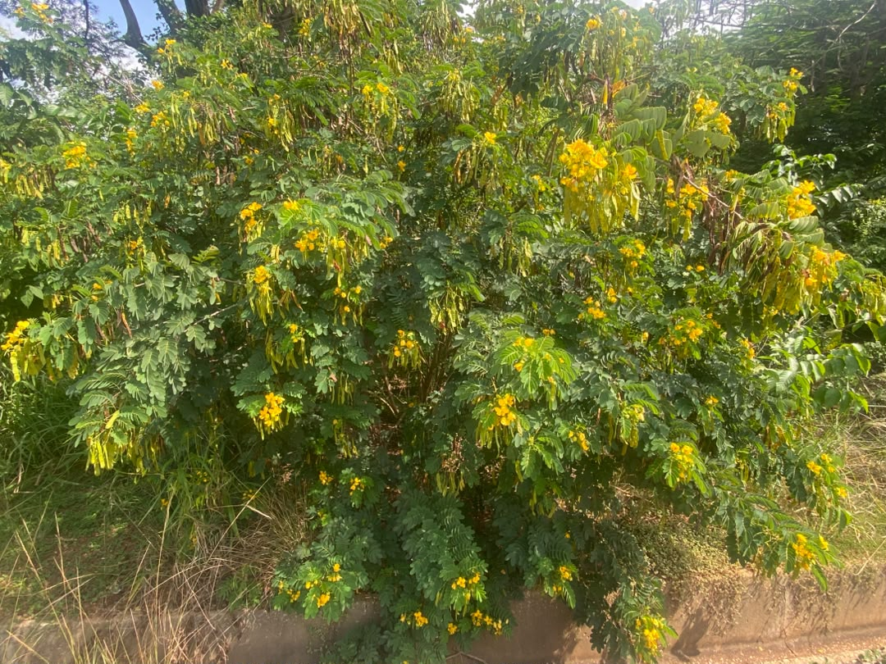

Appareil végétatif
Une diversité florissante
Des nervures souvent ramifiées parcourent les feuilles, et les tiges peuvent se ramifier. Les fruits protègent les graines et facilitent leur dispersion. La pollinisation par les insectes favorise de nombreuses formes et couleurs de fleurs.
Le défi relevé
Attirer les pollinisateurs
Couleurs, odeurs, nectar et formes guident les visiteurs vers les fleurs. En transportant le pollen, ils contribuent à la fécondation et à la formation des graines.
fleur
→
insecte
→
fruit
